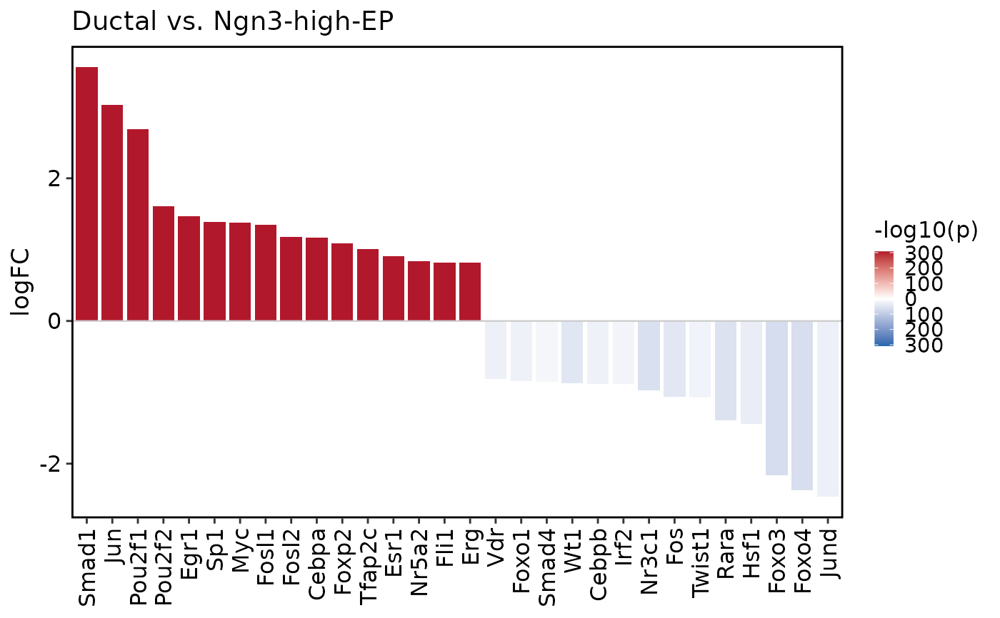

Compare DoRothEA transcription factor activity between two groups and draw
a signed bar plot. Bar height is the mean activity difference
group1 - group2; fill color is the signed -log10(p) or
-log10(adjusted p), where the sign follows the activity difference.
Usage
DorotheaPlot(
srt,
group.by,
group1,
group2,
tool_name = "Dorothea",
features = NULL,
top_n = 30,
test.use = c("wilcox.test", "t.test"),
p.adjust.method = "BH",
color.by = c("p_val", "p_val_adj"),
rank.by = c("abs_logFC", "p_val", "p_val_adj", "logFC"),
sort.by = c("logFC", "abs_logFC", "p_val", "p_val_adj"),
p_floor = .Machine$double.xmin,
bar_width = 0.85,
cols = c("#2166AC", "white", "#B2182B"),
title = NULL,
xlab = NULL,
ylab = "logFC",
fill.title = NULL,
angle = 90,
hjust = 1,
vjust = 0.5,
theme_use = "theme_scop",
theme_args = list(),
return_data = FALSE,
verbose = TRUE
)Arguments
- srt
A
Seuratobject containing results fromRunDorothea().- group.by
Metadata column used to define groups.
- group1, group2
Two group labels to compare. Positive logFC means higher TF activity in
group1.- tool_name
Name of the
srt@toolsentry created byRunDorothea().- features
TFs to plot. If
NULL, all TFs are tested and the toptop_nTFs are shown.- top_n
Number of TFs to show when
features = NULL. SetNULLto show all tested TFs.- test.use
Statistical test used for each TF.
- p.adjust.method
Method passed to stats::p.adjust.
- color.by
P-value column used for bar fill.
- rank.by
Metric used to select top TFs when
features = NULL.- sort.by
Metric used to order TFs on the x-axis.
- p_floor
Lower bound used before
-log10()transformation.- bar_width
Width of bars.
- cols
Color vector of length 3 for low, midpoint, and high values.
- title, xlab, ylab, fill.title
Axis, plot, and legend titles.
- angle
X-axis text angle.
- hjust, vjust
X-axis text justification.
- theme_use
Theme function used to style the plot.
- theme_args
Other arguments passed to
theme_use.- return_data
Whether to return a list with the plot and statistics.
- verbose
Whether to print the message. Default is
TRUE.
Examples
data(pancreas_sub)
pancreas_sub <- standard_scop(pancreas_sub, verbose = FALSE)
#> ℹ [2026-05-24 15:05:32] Skip `log1p()` because `layer = data` is not "counts"
pancreas_sub <- RunDorothea(
pancreas_sub,
layer = "counts",
species = "Mus_musculus",
method = "ulm",
minsize = 5,
new_assay = FALSE
)
#> ℹ [2026-05-24 15:07:32] Run DoRothEA/decoupleR with 12895 regulon edges
#> ℹ [2026-05-24 15:07:43] DoRothEA TF activity scores stored in <Seurat> metadata
groups <- unique(as.character(pancreas_sub$CellType))
DorotheaPlot(
pancreas_sub,
group.by = "CellType",
group1 = groups[1],
group2 = groups[2]
)
#> ℹ [2026-05-24 15:07:43] Compare DoRothEA TF activity: "Ductal" vs "Ngn3-high-EP"
